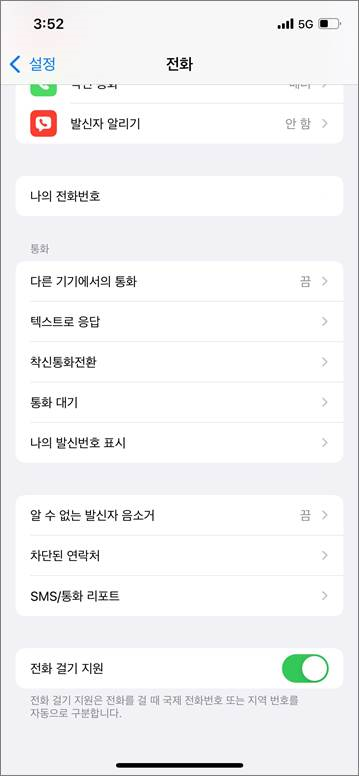

해외 로밍 후 국내에서 대표번호(1588 등) 발신 시 결번 멘트 송출 및 발신 불가” 현상에 대한 응대가이드를 공유 드리니 현장에서 정확히 안내될 수 있도록 교육 부탁드립니다. •현상 : 해외 로밍 후 국내에서 대표번호(1588 등) 발신 시 결번 멘트 송출 및 발신 불가 •원인 : 일부 아이폰의 경우, 전화 걸기 지원*이 켜져 있을 경우 해외 로밍 후 국내 복귀 시 단말 동작 오류로 +82가 자동으로 입력되어 발신 불가 •조치 방법 : 아이폰 “설정” → “전화” → “전과 걸기 지원” OFF 설정 *전화 걸기 지원 : 전화를 걸 때 국제 전화번호 또는 지역번호를 자동으로 구분하는 기능 -->